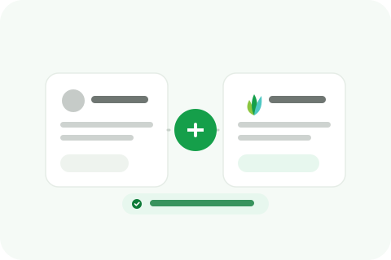

Signing the partnership agreement is the easy part, actually launching smoothly takes some groundwork most agencies underestimate. Here's what's worth having ready before your first client case.

Decide your retail pricing before you need it mid-conversation with a prospect. Whether you're on a revenue-share or wholesale model with your provider, work out your markup and packaging in advance, a client call isn't the time to figure out what you're actually charging.
Know exactly what you're reselling and what you're not. If the partnership covers Google review removal but not DMCA takedowns, make sure your sales team or your own understanding reflects that precisely, nothing erodes trust with a new client faster than promising something that isn't actually part of what you can deliver.
Figure out how information actually flows from your client to your provider, what details you need from the client (the listing, the specific reviews, any supporting evidence), and how you'll pass that along efficiently. A clunky intake process is one of the most common places white-label partnerships break down in practice, not because the underlying service is bad, but because getting a case started takes too many back-and-forth emails.
Decide upfront who talks to the client about what. Some partners handle all client communication themselves and treat the provider purely as a backend. Others are comfortable with the provider handling case-specific updates directly under the partner's brand. Neither is wrong, but it needs to be explicit before your first case, not figured out reactively when a client asks a question nobody's prepared to answer.
Decide how transparent you'll be that this is a white-label arrangement versus fully in-house work. There's no universal right answer here, some partners are fully transparent, others aren't, but it should be a deliberate choice consistent with your own brand positioning, not something left ambiguous until a client asks directly.
Before quoting a client, understand the actual range of outcomes your provider typically sees, some cases resolve quickly, others take longer depending on the platform and the specifics. Setting expectations with your own client based on a realistic range, rather than the fastest example you've heard about, protects your relationship with that client regardless of how any individual case goes.
Not every case resolves the way a client would like, some reviews are genuine and don't qualify for removal no matter how unflattering. Decide in advance how you'll communicate that outcome to a client, and who delivers that message, before you're doing it for the first time under real pressure. A prepared, honest explanation lands very differently than one improvised in the moment.
Walk through a hypothetical case end to end on paper: a client comes to you with a specific bad review, who collects the details, how it gets to your provider, who updates the client and when, and what you say if it doesn't qualify for removal. If you can answer every step without hesitation, you're actually ready. If any step makes you pause, that's the gap worth closing before a real client is waiting on the answer.
None of this is complicated, but all of it is easy to skip when the excitement of a new partnership is still fresh. Pricing, scope, intake, communication boundaries, and timeline expectations, nailing these down before your first client case means that case goes smoothly instead of becoming the one that teaches you what you should have prepared for.
We'll walk through pricing, scope, and intake with you before your first case, not after.